GoLog 是一個記錄出行軌跡的 App。
不打卡、不社交，就是單純記錄你去過的地方。
位置不只是座標，軌跡也不只是線條。
在 GoLog 裡，你的每一次移動都會被記錄下來。
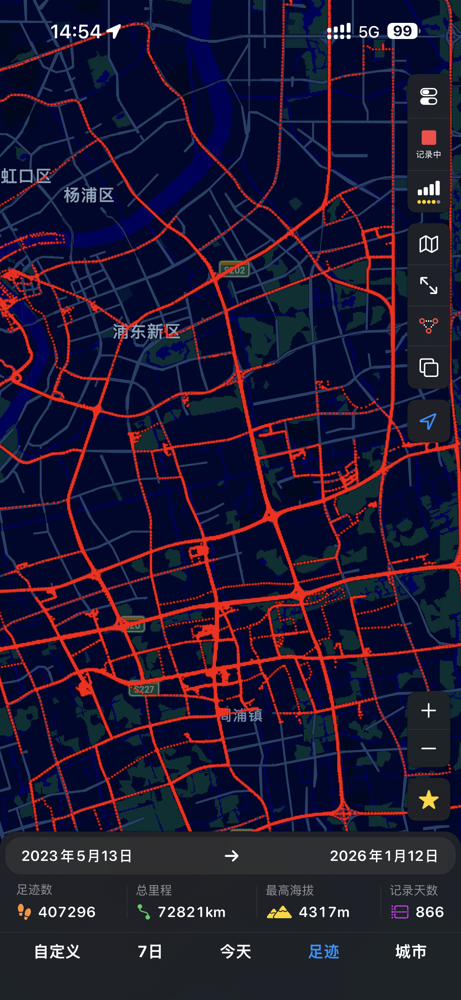
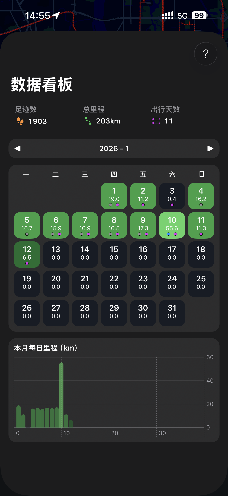
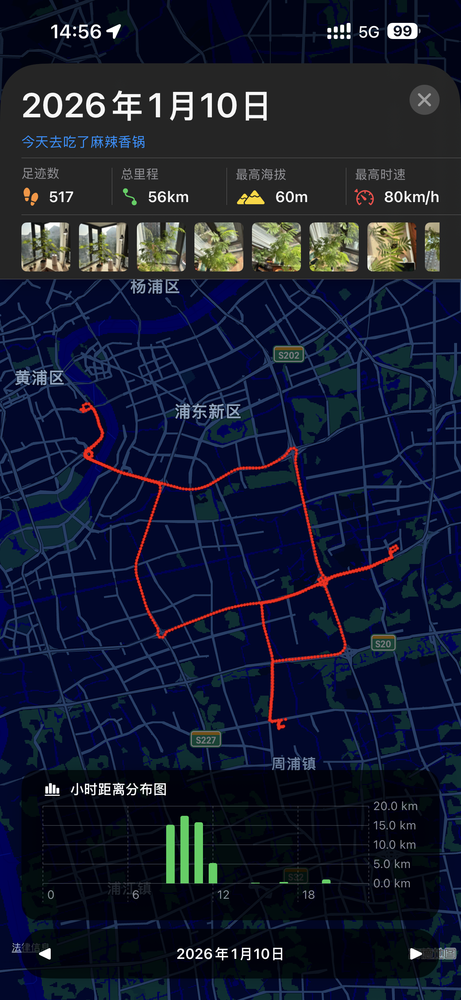
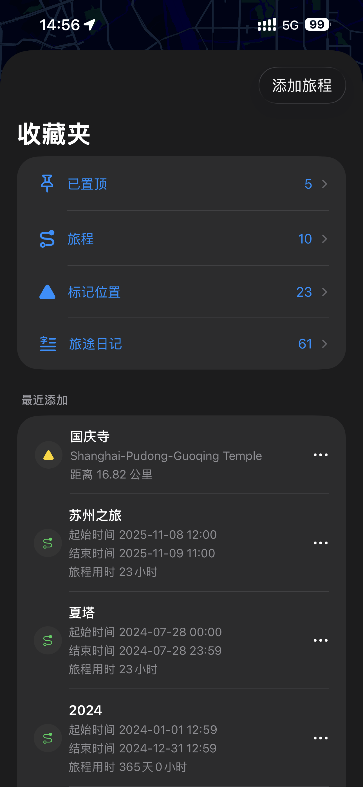
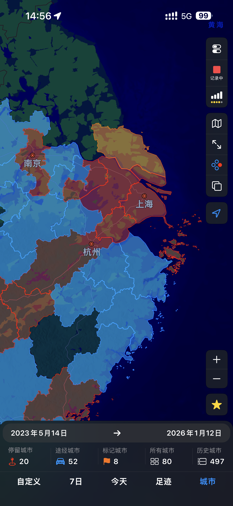
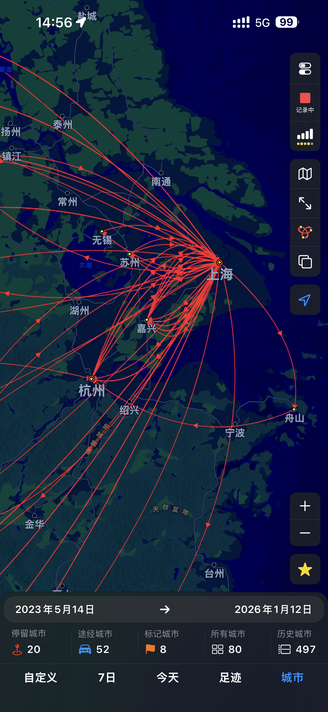
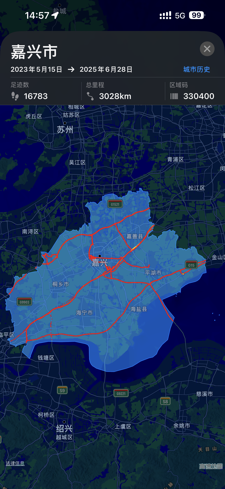
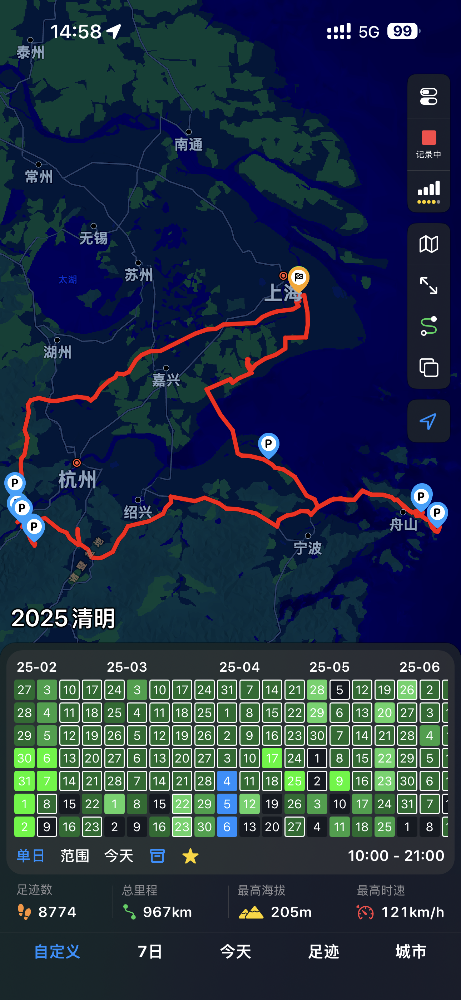
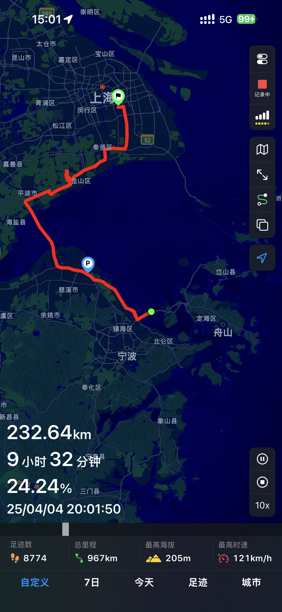
依照你的定位資料，在地圖上顯示你去過的地方與走過的路線。
放大看細節、縮小看整體活動範圍。
不只看去了哪裡，也能看一段時間的出行頻率。
以天／月統計，回顧自己的移動節奏。
可回放任意時間段的軌跡，重新看一遍你去過的地方。
路線與速度依照真實資料呈現。
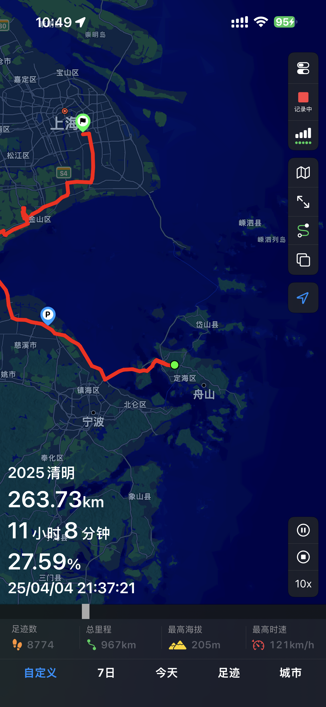
依日期查看、補全、歸檔或隱藏足跡。
想在地圖上顯示什麼，你自己決定。
看你在哪些城市停留過、停留多久，以及大概在哪些地方待過。
GoLog 沒有伺服器，不會收集你的資料。
足跡只存在你的手機裡。
若啟用 iCloud，資料會透過 Apple 的 iCloud 同步，只存在 App 專屬資料夾中。
你的資料，你自己掌控。
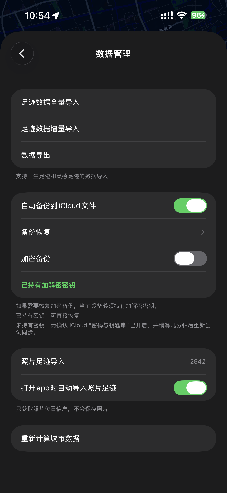
GoLog
不是為了記錄世界有多大，
而是記錄你確實走過這裡。